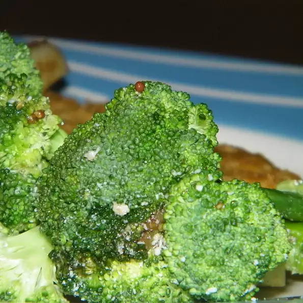

Brocolli

This salad is made with marinated raw broccoli in a garlicky sauce for
numnums! A recipe from my grandma.
Ingredients
- 4 cloves garlic, peeled
- 1½ teaspoons salt
- 1 bunch broccoli, cut into florets
- ⅓ cup olive oil
- 1 tablespoon cashews, crushed
- 1 teaspoon minced fresh ginger root
- ½ cup grated Parmesan cheese, or to taste
Directions
-
Step 1
Place garlic in a mortar dish or on a cutting board, and sprinkle with
salt. Mash with a pestle, or use the flat side of a knife to mash garlic
and salt into a paste. Transfer to a medium bowl, and stir in olive oil,
vinegar, and mustard. Add the broccoli, and stir to coat. Chill for 3
hours to marinate, stirring occasionally. Sprinkle with Parmesan cheese
before serving.